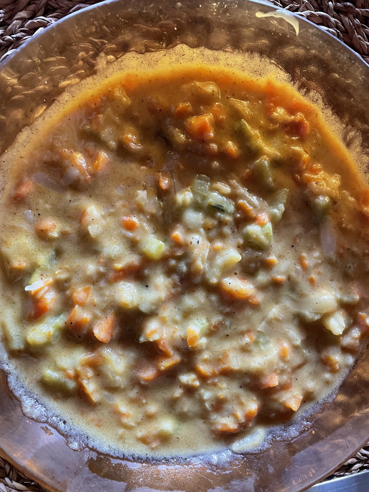

Calabacín, cebolla y zanahoria salteados con crema vegana
Ingredientes
2×
- 1 cebolla
- 1 zanahoria
- 1 calabacín
- aceite de oliva
- 200 ml de crema de leche vegana
- 50 g de queso vegano

Preparación
Paso 1
Picar en dados pequeños 1 cebolla, 1 zanahoria y 1 calabacín.
Paso 2
Saltear la cebolla y la zanahoria con aceite de oliva 10min, añadir el calabacín y saltear 5min más. Salpimentar.
Paso 3
Añadir 200 ml de crema de leche vegana y 50 g de queso vegano rallado y cocer unos minutos hasta que espese.
Resumen
1 cebolla
1 zanahoria
1 calabacín
Picar
aceite de oliva
Saltear saltear
200 ml de crema de leche vegana
50 g de queso vegano
cocer